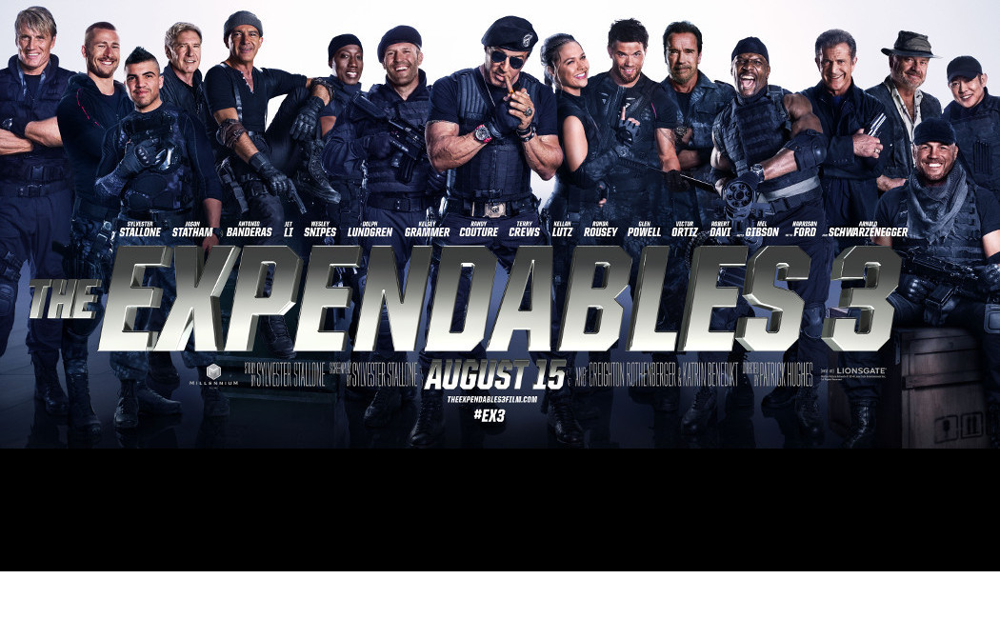
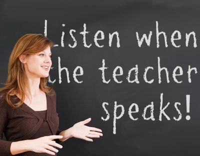
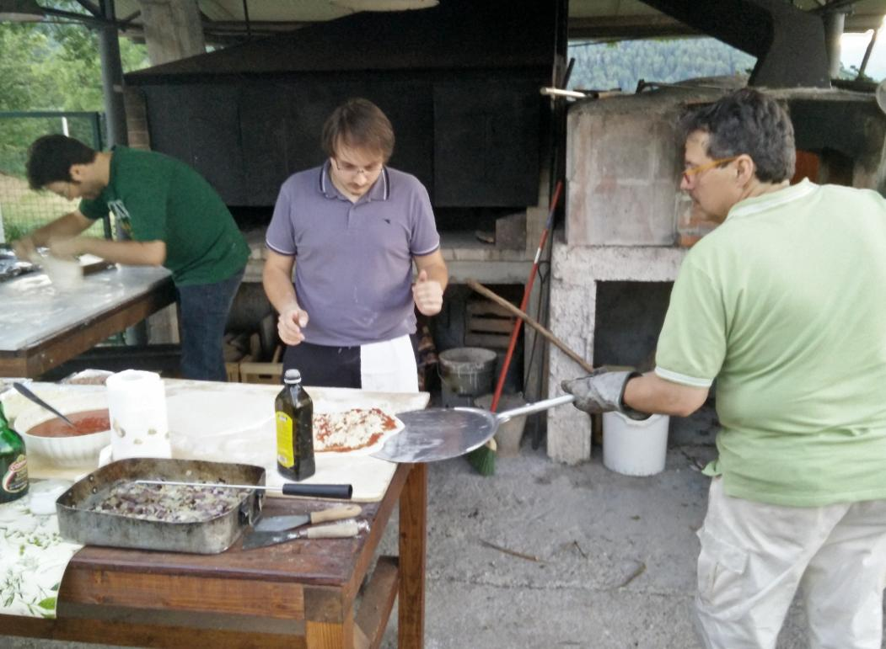
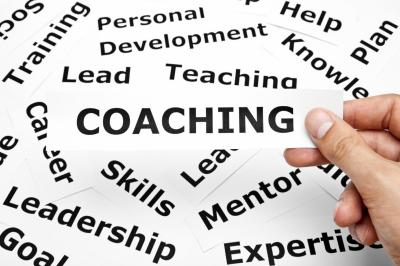

Coaching for Open Source Communities 2.0
Daniele Scasciafratte
Coaching for Open Source Communities

Why Expendables movie as cover?
Not because of the movie name but for the people
Examples of different kinds of people working together
Everyone has a specific role
And specific useful tools
Everyone is easy to reconize for his role
Everyone "doesn't" have problems in doing their tasks
They trust each others
The boss is a leader
We are not soldiers
We are volunteers
Daniele Scasciafratte
Co-Founder & CTO of Codeat
Mozillian, Mozilla Reps (2 years inside Reps Council), Mozilla Tech Speaker
Mozilla Italia Participation Team
WordPress Italia - Project Translator Editor & Core Contributor & WP Roma Co-Organizer
ClassicPress - i18n team lead & Founding Committee Member
Industria Italiana del Software Libero
President
What is Coaching?

Again we are not soldiers but leaders, we understand people.
The coaching way
Coaching is not only to help others but also you
Focus on
Skills
not the Person
Learn to
delegate
and thrust the people around you
Talk to people with motivation in mind (Guide or Excite)
Let
to the people to talk and ask for help
Guide, don't Judge
Create
confidence
GROW Model
Goal: what is your goal?
Reality: actual situation with bad and good facts
Options: define few solutions
Wrap Up: recap and define a way
Define the problem, What you want to achieve, Propose few options, Recap and create a plan
Coaching for open source in action
The 🇮🇹 Italian Coaching Way
Team work

Enjoy the results
Enjoy together
Coaching for OS community
Everyone works together
You are not an usual member but a veteran of the community
Know your community status and the people of your community
Define the best way for members to do a community
Find propositive people during the activities
Ask them to join discussions
Be transparent about decisions
Don't forget to say thank you
You are a volunteer like the others
Organize a schedule before the meetings and share it
Prepare activities with examples/documentation
Create rules, policies and workflows with the community
Presence on social networks
Ask always for feedbacks
First coaching experiment for you
What are you working on?
What else should be included?
What is the challenge?
What do you want?
How I can help?
If you say yes to this solution, what you lose?
What was useful for you?
See from different point of views
Split in different section
Write everything that you can forget
Do a plan with dates
Document examples about the improvements and why
Ask for feedback to others
Reading list
Resources
The Tao of Coaching book by Max Landsberg
From Techie to Boss book by Scott Cromar
How to Win Friends & Influence People by Dale Carnegie
The manager as Coach and Mentor by Eric Parsloe
Delegating for Results by Robert Maddux
https://wiki.mozilla.org/Reps/Leadership
Valuing Volunteerism: A Cost Perspective
A Coaching guide for Mozillians
Connected Devices Contributor Experience Research
Mentor/Mentee conversation about Mission Driven Mozillians
Example as results of Coaching
How to recruit and motivate new volunteers
Results of the Mobilizer Experiment for WebExtension Italy
How to be a Tech Speaker
What does Open Source mean?
YouTube Playlist of Suse Parody songs
Any Question?
Slide:
http://mte90.tech/Talk-Coaching/
